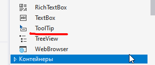

ToolTip Class
Представляет небольшое прямоугольное всплывающее окно, в котором отображается краткое описание назначения элемента управления, когда пользователь наводит указатель мыши на элемент управления.
